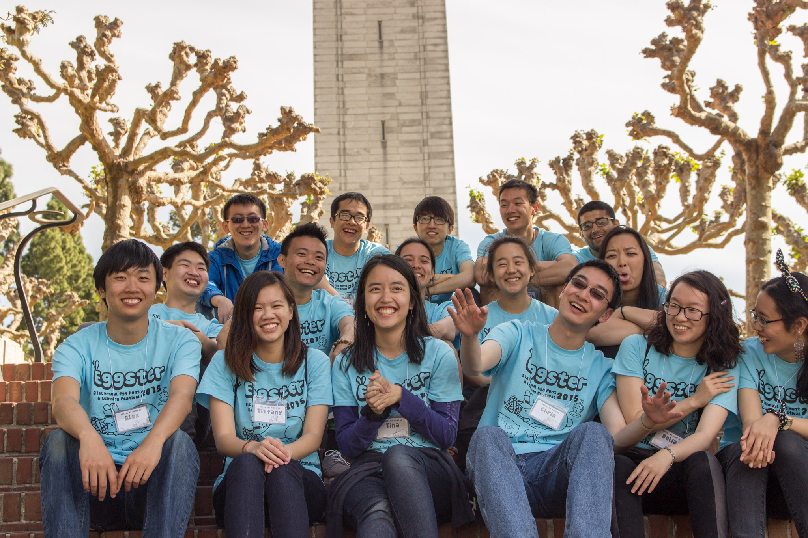
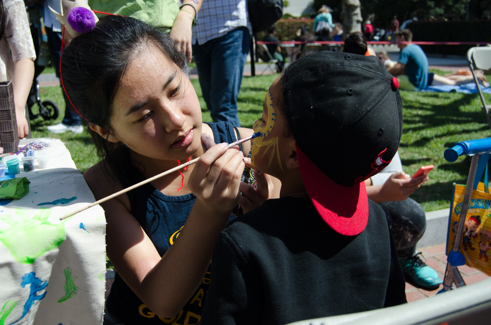
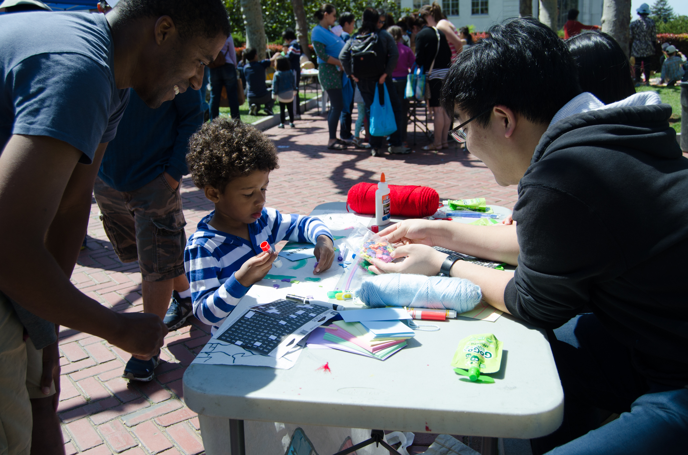
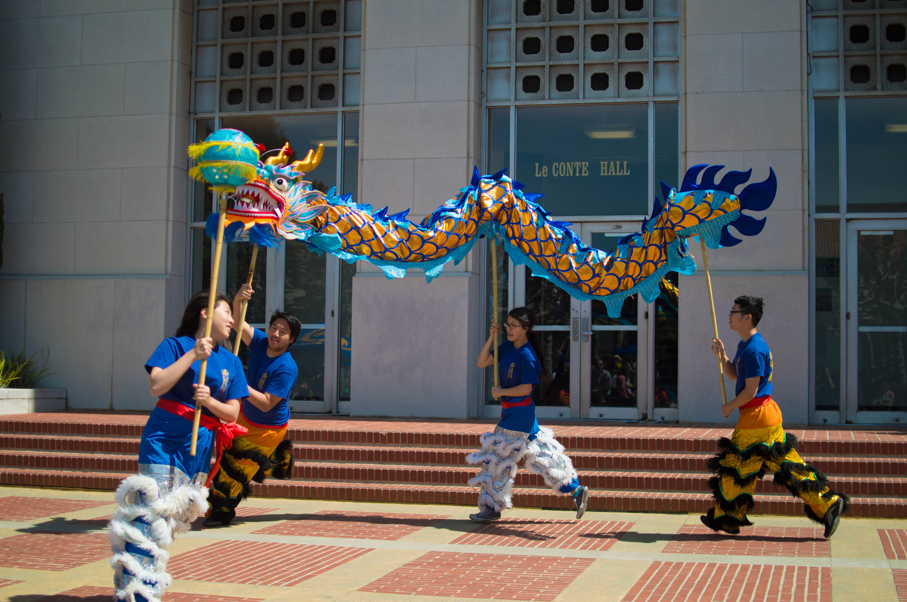
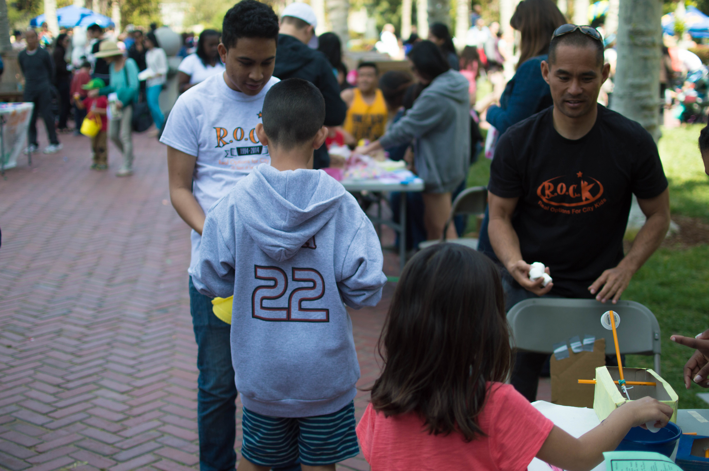
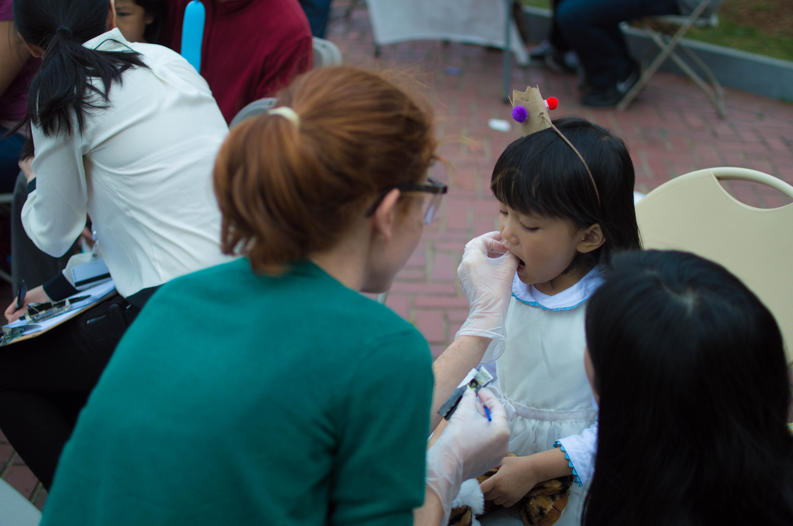
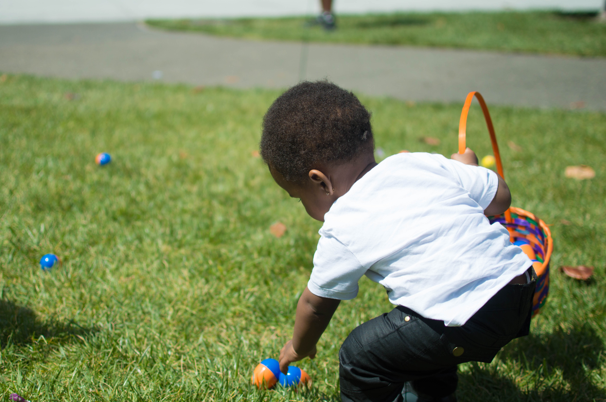
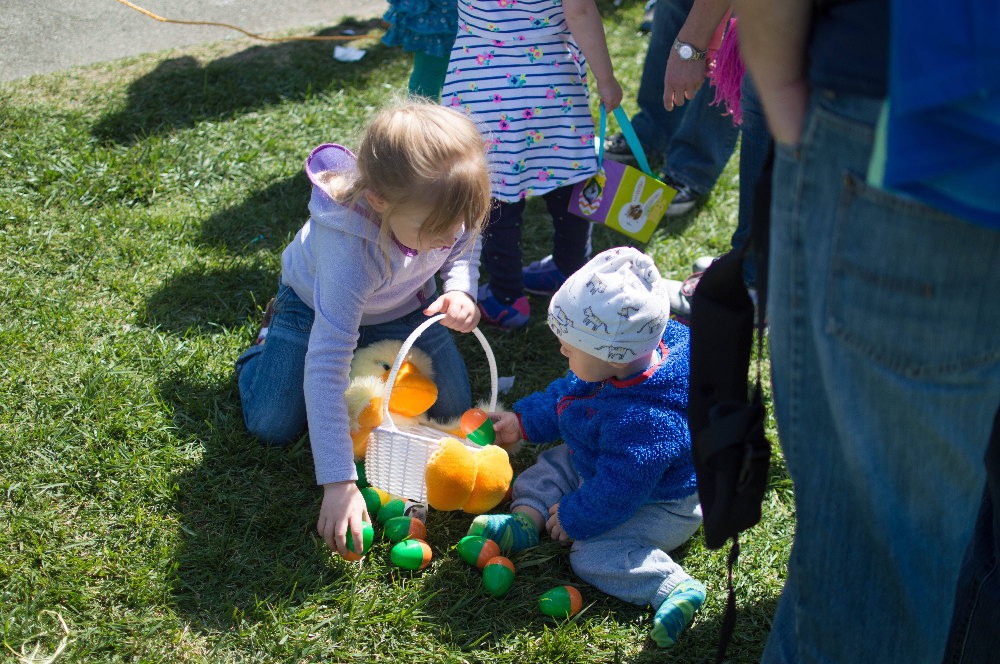
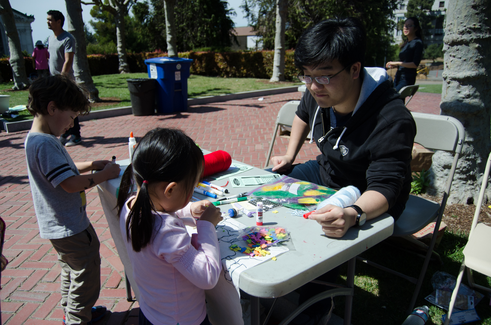
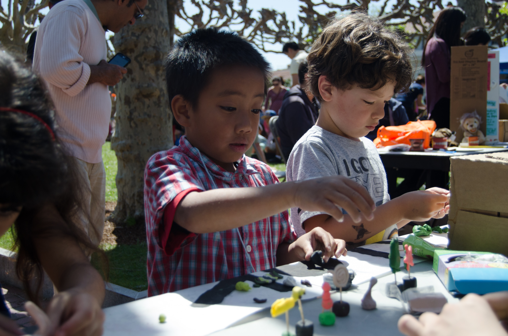

The Eggster Learning Festival & Egg Hunt is a one-day carnival of fun and learning, open to the Bay Area community for free. The festival is wheelchair accessible, and there are special egg hunts for young toddlers and for children in wheelchairs. Eggster Organization is a student group acting independently of the University of California. The student organization is the host of Eggster's 21st Annual Learning Festival & Egg Hunt and takes full responsibility for the guests.
This past year, we had over 1,000 children and their families come and enjoy the egg hunts, entertainment, and more than 50 learning booths organized by our members and over 300 community volunteers. We raised over $3,000 through individual and corporate donations, fundraisers, and raffle ticket and food sales. Proceeds from the event went toward local nonprofit children's agencies.

- 
- 
- 
- 
- 
- 
- 
- 
- 
- 
About Us
Our Mission
Eggster's mission is to nurture the creativity, curiosity, and welfare of Bay Area youth by:
offering a free event on the UC Berkeley campus open to all families and providing children with a fun and educational experience through egg hunts, learning booths, and performances while simultaneously introducing them to the benefits of a post-secondary education;
bringing together corporations, local businesses, UC Berkeley alumni and students, and other members of the Bay Area community in the interest of supporting select youth oriented non-profit agencies;
uniting UC Berkeley organizations, departments, and students in putting on the event and serving the local community;
volunteering in the community to connect with the population we serve.
History
In the fall of 1994, undergraduate students from the Alumni Scholars Club of the California Alumni Association proposed the idea of creating a wonder-filled festival of learning for children at the UC Berkeley campus to inspire children from under-represented communities toward higher education.
With the support of the California Alumni Association, Alumni House staff, and UC Berkeley alumni, the Alumni Scholars Club collaborated with student groups and community-based organizations to plan and create the first Eggster Learning Festival & Egg Hunt on April 15, 1995. Over two thousand people from the community and three hundred UC Berkeley students participated in the free event featuring egg hunts, learning activity booths created by various student groups, and entertainment by the Cal Band, Men's Octet, clowns, cultural student groups, musicians, martial arts programs, Cal athletics, and many others. Still growing in its 21st year of serving thousands of children and their families, the Eggster Learning Festival & Egg Hunt has become an important tradition for the University and Bay Area community.
The Eggster Committee is now made up of Cal student volunteers who are dedicated to contributing to the community-based organizations and to providing the community with a day rich with creative fun and learning. The Associated Students of the University of California (ASUC) and UC Berkeley's Public Service Center now sponsor and provide Eggster with support and staff advisors.
With the support of the California Alumni Association, Alumni House staff, and UC Berkeley alumni, the Alumni Scholars Club collaborated with student groups and community-based organizations to plan and create the first Eggster Learning Festival & Egg Hunt on April 15, 1995. Over two thousand people from the community and three hundred UC Berkeley students participated in the free event featuring egg hunts, learning activity booths created by various student groups, and entertainment by the Cal Band, Men's Octet, clowns, cultural student groups, musicians, martial arts programs, Cal athletics, and many others. Still growing in its 21st year of serving thousands of children and their families, the Eggster Learning Festival & Egg Hunt has become an important tradition for the University and Bay Area community.
The Eggster Committee is now made up of Cal student volunteers who are dedicated to contributing to the community-based organizations and to providing the community with a day rich with creative fun and learning. The Associated Students of the University of California (ASUC) and UC Berkeley's Public Service Center now sponsor and provide Eggster with support and staff advisors.